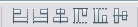

Netbeans GUI Builder
Topics Covered:
Things To Do Before Class
- Check and (and even bookmark) the
GUI Builder Visual Feedback Legend
(When you learn how to use the GUI Builder, you'll see some terminology and
symbols that might be unfamiliar. This page shows you what everything mean.)
NetBeans GUI Builder Tutorial
Netbeans includes a special tool that can be used to develop
Swing GUI interfaces. This "GUI Builder" can help you to design
complex layouts without having to worry about nested layout managers.
It helps to understand how to use JPanel controls and how layout
managers work, but the GUI Builder makes interface design
less tedious and cumbersome.
You will be going through a tutorial on the Netbeans web site
that teaches you how to work with the GUI Builder. You will
need to make note of the following things:
- What is the Palette Window for?
- What is the Properties Window? What are Properties?
- What does the Inspector window show you? What happens if you click
an item in the Inspector Window?
- How do you view the source code behind your GUI?
- How do you change the Font or Border of a component?
- How do you change the text of a component?
- How do you quickly add multiple occurrences of the same component?
- What happens when you "drop" a component over another component?
What if you drop it over two other components?
- What are these buttons for? 
- What are the "resizability behavior" buttons/menu items/properties for?
What effect does this have on a component?
- How do you add a radio button group to a GUI?
- How can you preview your GUI without running the program?
In addition, there are some things that the tutorial doesn't cover that you
should try:
- To change the title text of the JFrame's title bar, use the title property.
- The code generated by the GUI doesn't use appropriate variable names for the
different components. Make sure you always change your variable names:
- Right click the component and select Change Variable Name
- Enter the desired name and click OK.
- If you examine the code generated by Netbeans, you'll see that all occurrences
of this component's name have been changed.
Here's the tutorial (stop at the section Deploying GUI Applications;
we'll go through this later in the course):
Designing a Swing GUI in NetBeans IDE
NOTE: You may be asked by your professor to show your finished program
as a "check off" assignment during class.